Abstract
Medical vision–language models can automate the generation of radiology reports but struggle with accurate visual grounding and factual consistency. Existing models often misalign textual findings with visual evidence, leading to unreliable or weakly grounded predictions. We present ``CURE'', an error-aware curriculum learning framework that improves grounding and report quality without any additional data. CURE tunes a multimodal instructional model on phrase grounding, grounded report generation, and anatomy-grounded report generation using public datasets. The method dynamically adjusts sampling based on model performance emphasizing harder samples to improve spatial and textual alignment. CURE improves grounding accuracy by +0.35 IoU, boosts report quality by +0.192 CXRFEScore, and reduces hallucinations by 18.6%. CURE is a data-efficient framework that enhances both grounding accuracy and report reliability. Code is available at https://github.com/PabloMessina/CURE and model weights at https://huggingface.co/pamessina/medgemma-4b-it-cure
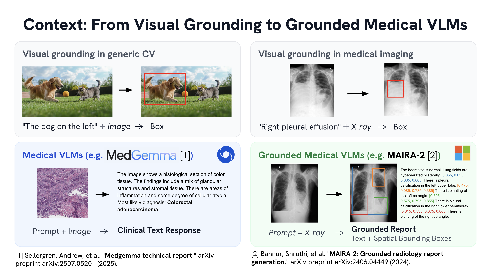
Background: Grounded medical Vision-Language Models (VLMs) aim to combine report generation with visual grounding, producing radiology text while bounding relevant findings.
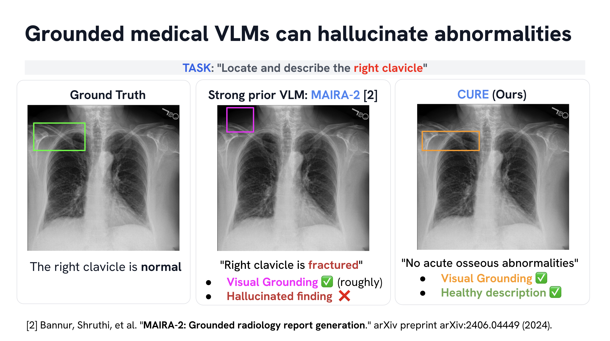
The Motivation: Grounded VLMs often hallucinate. When asked to ground a normal clavicle, MAIRA-2 hallucinates a fracture, while CURE correctly identifies and describes it as normal.
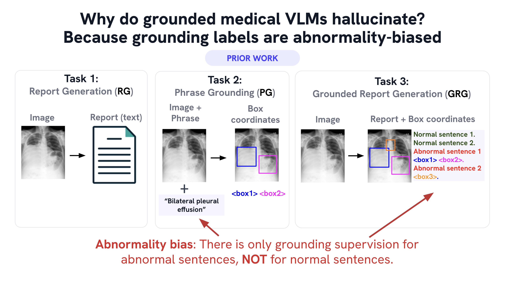
The Source of Hallucinations: Prior tasks only provide grounding supervision for abnormal findings, causing models to associate the act of grounding with abnormalities.
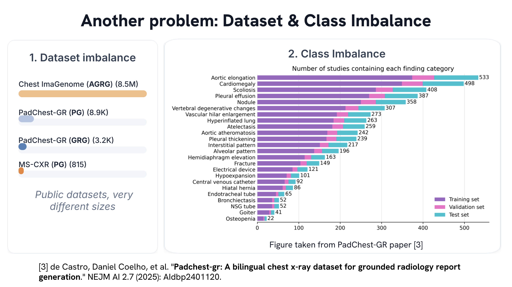
Data Imbalance: Severe dataset and class imbalances cause standard models to overemphasize frequent classes and neglect rare ones if not explicitly addressed.

The CURE Framework: CURE addresses these issues with a new Anatomy-Grounded task, an error-aware curriculum, and a unified instruction format to fine-tune MedGemma.
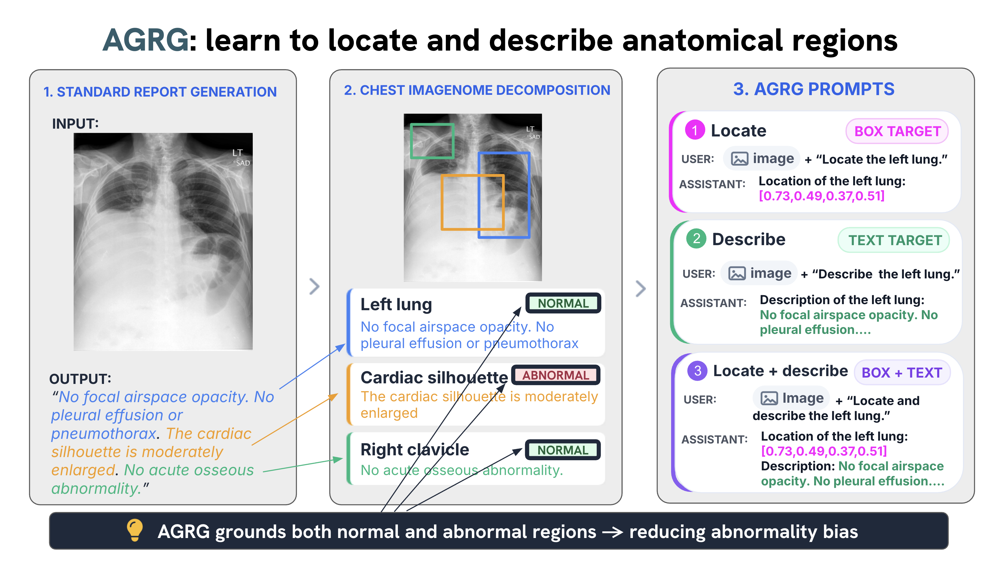
Anatomy-Grounded Report Generation (AGRG): CURE learns three subtasks (locate, describe, locate-and-describe) using Chest ImaGenome, providing supervision for both normal and abnormal anatomy.
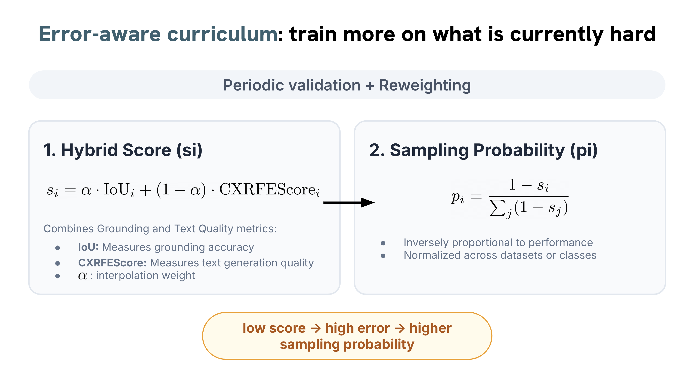
Error-Aware Curriculum: Every N steps, CURE computes a hybrid score (IoU + CXRFEScore) to dynamically assign higher sampling probabilities to data with higher error rates.
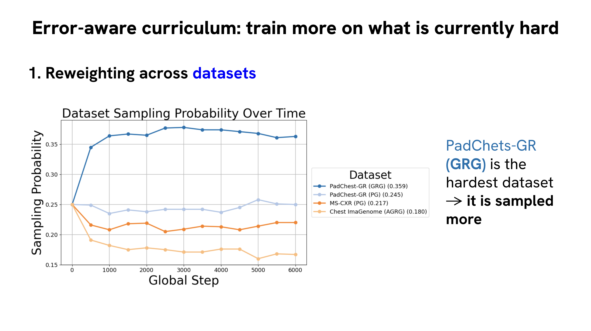
Dataset Reweighting: The curriculum dynamically increases the sampling rate for harder datasets during training, prioritizing datasets like PadChest-GR.
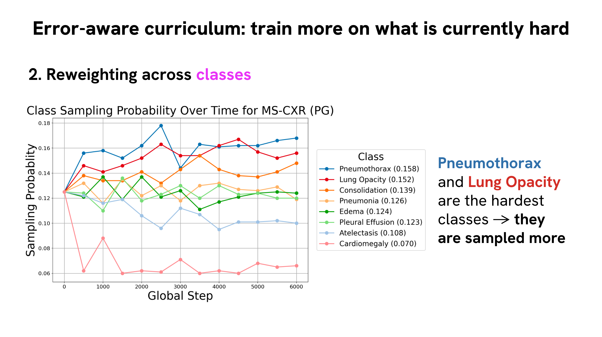
Class Reweighting: Within datasets, the curriculum successfully prioritizes harder classes, such as Pneumothorax and Lung Opacity.
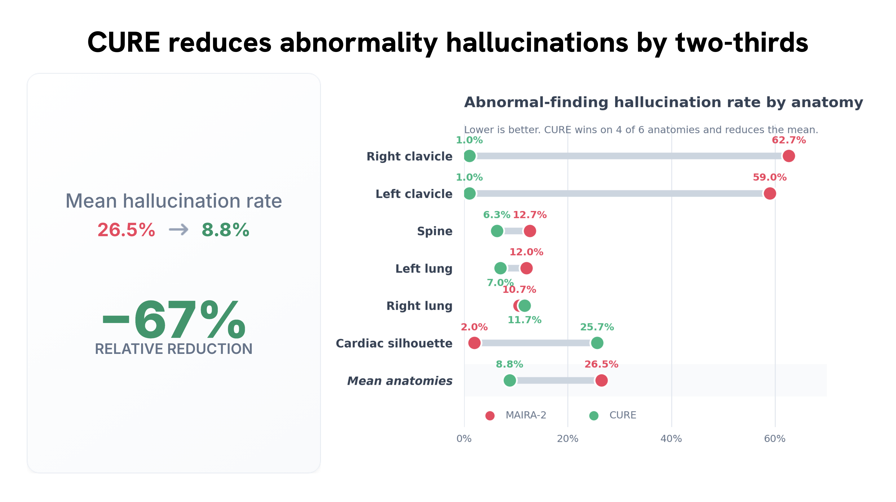
Reduced Hallucinations: CURE reduces abnormality hallucinations by two-thirds on average. For clavicles specifically, hallucinations dropped from nearly 60% down to 1%.
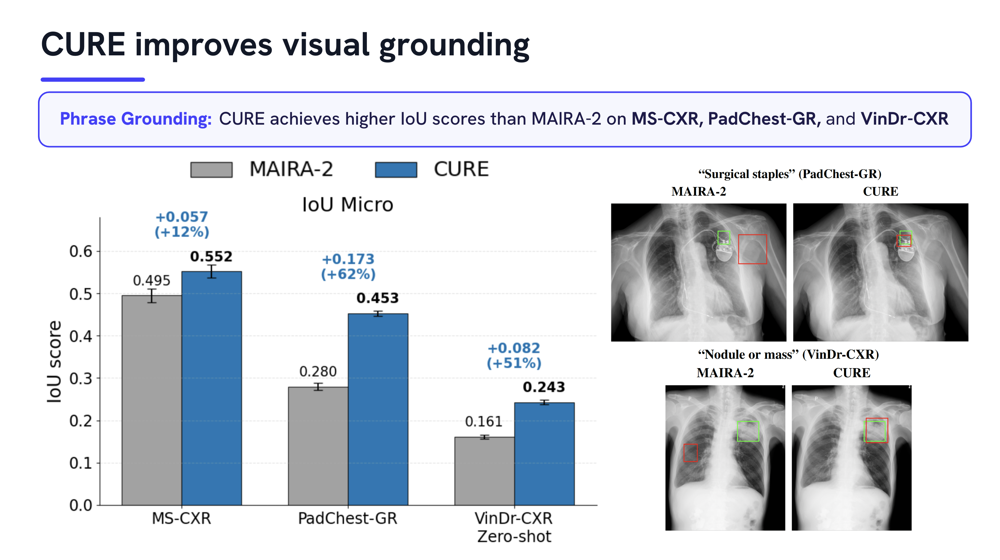
State-of-the-Art Phrase Grounding: CURE consistently outperforms strong baselines like MAIRA-2 across multiple benchmarks for phrase grounding.
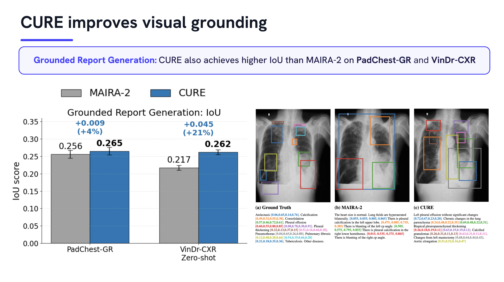
Grounded Report Generation: CURE leads in visual grounding accuracy on two separate benchmarks for the Grounded Report Generation task.
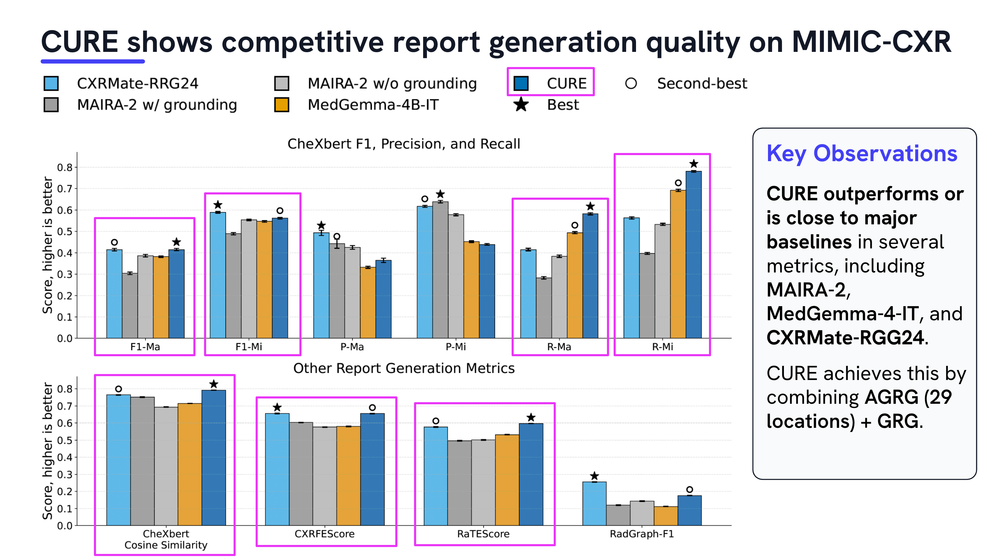
Competitive Report Quality: By combining AGRG outputs over 29 locations, CURE achieves competitive or superior report generation quality on MIMIC-CXR.
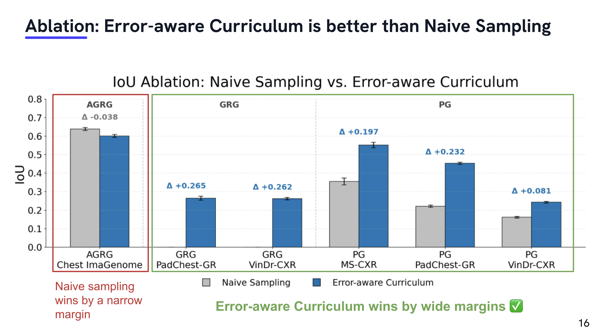
Summary & Takeaways: CURE introduces AGRG and an error-aware curriculum, leading to fewer hallucinations and better grounding. Key takeaway: ground normal anatomy too.
Acknowledgments
This work was conducted while P. Messina was a remote research intern at the Image and Video Understanding Lab (IVUL) at KAUST, under the supervision of B. Ghanem. P. Messina was supported by the ANID Scholarship Program (Doctorado Becas Chile 2019-21191569). We also acknowledge the support of Fondecyt grant 1231724. This work was also funded by ANID - Millennium Science Initiative Program - ICN2021_004 (iHEALTH) as well as ICN17_002 (IMFD), and by the National Center for Artificial Intelligence (CENIA) FB210017, Basal Funds for Centers of Excellence (ANID). The research reported in this publication was supported by funding from King Abdullah University of Science and Technology (KAUST) - Center of Excellence for Generative AI, under award number 5940.
BibTeX
@InProceedings{Messina_2026_CVPR,
author = {Messina, Pablo and Villa, Andr\'es and Alcazar, Juan Leon and Sanchez, Karen and Hinojosa, Carlos and Parra, Denis and Soto, Alvaro and Ghanem, Bernard},
title = {CURE: Curriculum-guided Multi-task Training for Reliable Anatomy Grounded Report Generation},
booktitle = {Proceedings of the IEEE/CVF Conference on Computer Vision and Pattern Recognition (CVPR)},
month = {June},
year = {2026},
pages = {36279-36289}
}